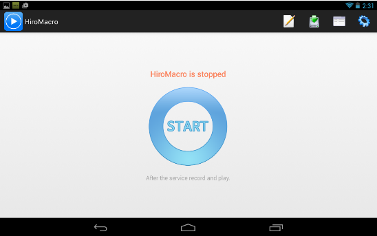
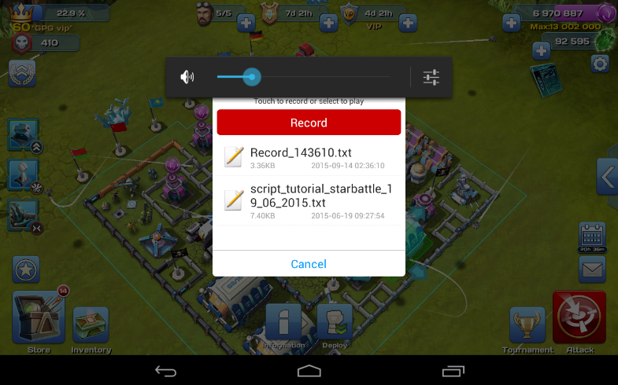
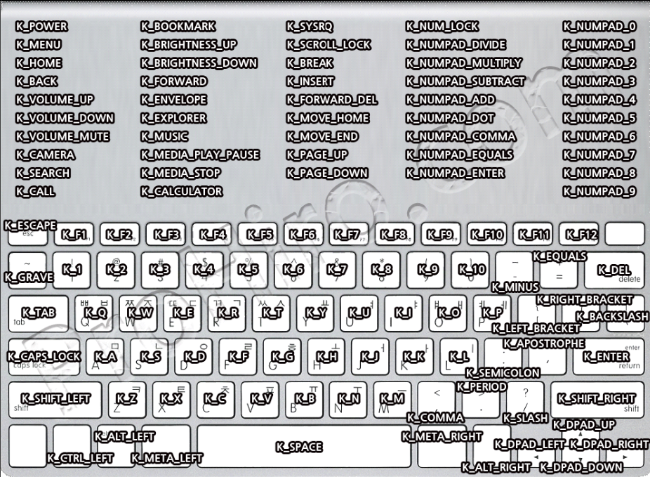

HiroMacro это автокликер для Android устройств с сенсорным управлением
Официальный сайт: https://play.google.com/store/apps/details?id=com.prohiro.macro&hl=ru
1. Установить приложение
2. Запустить приложение
3. Нажать кнопку "Старт"

4. Для записи действий нужно открыть игру, и нажать кнопку уменьшения звука на устройстве
5. Откроется окно в котором нужно нажать кнопку записть.

6. Для остановки записи действий нужно повторно нажать кнопку уменьшения звука
7. Для воспроизведения скрипта, необходимо нажать кнопку уменьшения звука и выбрать нужный скрипт.
touchDown finger x y
Нажатие на экран Параметры
finger: номер пальца. максимум 4, 0 для рандома x: координаты по x
y: координаты по y пример:
touchDown 0 100 200
touchDown 1 300 300
touchMove finger x y
Движение пальца по прямой к указанной координате Параметры те же
пример:
// Прикоснемся пальцем 0 к экрану touchDown 0 100 200
// Прикоснемся пальцем 1 к экрану touchDown 1 500 500
// Двинем пальцем 0 к координате 30,20 touchMove 0 30 20
// Двинем пальцем 1 к координате 0,0 touchMove 1 0 0
Поясню. Мы прикасались к экрану двумя пальцами, условно обозначенными 0 и 1. палец 0 сдвинулся от 100,200 к 30,20, а палец 1 - от
500,500 к 0,0
4.2.3. touchUp finger Отрыв пальца от экрана Параметры:
finger: номер пальца пример:
// Прикоснемся пальцем 0 к экрану touchDown 0 100 200
// Подождем 1 секунду (1сек = 1000мс) sleep 1000
// Сдвинем палец к 200,200 touchMove 0 200 200
// И отпустим палец 0 touchUp 0
touchPress finger x y
Данная функция работает каа если бы вы нажали и отпустили палец (т.е. touchDown и touchUp)
Параметры - finger, x, y. Что это - вы уже знаете Возьмем простой код:
touchDown 0 100 200
touchup 0
Его можно записать в одну команду: touchPress 0 100 200
С сенсором разобрались. Но у андроида еще есть кнопки и клавиатура.

Учим следующие команды:
keyDown code
Нажатие кнопки/клавиатуры. Параметры:
code: код кнопки. (см. рис.)
// Отпустим кнопку keyUp K_A
sleep 1000
// Зажмем SHIFT keyDown K_SHFT_LEFT
// Зажмем букву A keyDown K_A
// Зажмем букву А (т.к. нажат shift, введется заглавная А) keyDown K_A
// Отпустим кнопку keyUp K_A
// Отпустим shift keyUp k_SHIFT_LEFT
естественно, у вс должна быть открыта прогамма, в которую можно что-нибудь вводить, например, текстовой редактор. Если вы все сделали правильно, у вас получится "аА".
keyUp code
Мы уже рассматривали эту команду. Она убирает палец с кнопки
keyPress code
Выполняет keyDown, а потом keyUp.
Возьмем код
keyDown K_BACK keyUp K_BACK
И сократим его keyPress K_BACK
На этом работа с кнопками завершена, идем дальше!
Sleep time
Задержка (в мс). 1 секунда - 1000мс Параметры:
time: время в мс пример:
// Задержка в 1 секунду sleep 1000
Var name val
Объявление переменной и присвоение ей значения. Параметры:
name: имя переменной. содежит символ "#" и латинские буквы. например
#a, #lol
val: Числовое значение переменной (0 1 2 3 4 5)
// объявим переменную #abc и присвоем ей значение 0
Var #abc 0
Set name val
Изменяет значение ОБЪЯВЛЕННОЙ(!) переменной Посмотрите на следующий код:
// Объявляем переменную Var #abc 0
// метка :start (о них позже)
:start
// Изменим переменную #abc на 1 Set #abc 1
// покажем тост с этой переменной (о них позже) toast #abc
// Метка :end
:end
Calc var val1 option val2
Математические действия над переменными Params
var : Переменная, в которую будет записан результат val1: Первая переменная/число
option: + (Сложить), – (Вычесть), / (Разделить), * (Умножить) % (Остаток при делении)
val2: Вторая переменная/число Давайте посчитаем:
// Объявим переменые Var #result 0
Var #abc 0
:start
// Изменим #abc на 1 Set #abc 1
// Сложим #abc и 10 и запишем результат в #result calc #result #abc + 10
// Покажем результат (должно появится 11) toast #result
// Подождем 3 секунды sleep 3000
// Вычтем из результата 5 Calc #result #result - 5
// Покажем результат
toast #result
:end
Есть и другой способ. Давайте рассмотрим такой пример:
// Объявляем переменные Var #result 0
Var #abc 0
:start
Set #abc 1
calc #result #abc + 10 toast #result
sleep 3000
Calc #result #result - 5 toast #result
:end
... И сделаем его попроще
#abc = 1
#result = #abc + 10 toast #result
sleep 3000
#result = #result - 5 toast #result
Можно даже так:
#result = (#abc+10-1)*2+(#abc%10)*5
#result = #abc+#result-10
4.2.13. Rand var min max Рандомные числа.
Параметры
var : Переменная куда будет сохранено рандомное число min: Минимальное значени
max: Максимальное значение
var #count 0
:start
// Больше 10 но меньше 20
rand #count 10 20
// И смотрим наш рандом toast Random is #count
sleep 2000
// Делаем бесконечный цикл goto :start
:end 4.2.14. If Endif Условия Делаем наши скрипты чуточку умнее. В условиях |
можно |
сравнивать |
переменные и числа. Эти знаки вам помогут: = или == равенство != отличие < меньше > больше <= меньше или равно => больше или равно and и or или |
||
А теперь практика: |
||
Var #count 0 |
||
:start |
||
#count = #count + 1 |
||
// Если #count равен 10... |
||
if #count == 10 |
// ... То покажем "count равен 10"! toast count равен 10
// И закроем условие endif
// #count больше 10 и меньше 20 if #count > 10 and #count <20
toast 20 count больше 10 и меньше 20
endif
// #count равен 5 или 8
if #count == 5 or #count == 8
toast The current count is 5 or 8.
endif
:end ElseIF
Иначе Если...
При не выполнении условия if, можно выполнить другое (else if). Чтобы было понятнее, рассмотрите следующий код:
Var #count 0
:start
#count = #count + 1
// Если #count равен 10 if #count == 10
toast count равен 10
// Иначе если #count равен 15 elseif #count == 15
toast count равен 15
// Иначе Если #count больше/равен 20 elseif #count >= 20
toast count больше или равен 20
endif
:end
Else
Если if и все elseIf не были выполнены, то выполняется else. Это как в жизни:
if я хочу пойти в бар
взять деньги else if денег нет
найти деньги else if не нашел денег
заработать их else ты бомж
endIf
Правда, HiroMacro такое не поймет :D Зато она поймет это: Var #count 0
Var #na 0
:start
#count = #count + 1
// Вычислим остаток при делении на 2
#na = #count % 2
// Если значение 0 if #na == 0
toast Count - четное число
// Иначе else
toast count - нечетное число
// End of if statement. endif
:end
Goto label
Переход к метке. Метка начинается с двоеточия (:), и может располагаться в любом участке кода, однако метки :start и :end должны быть обязательно.
var #count 0;
:start
calc #count #count + 1
// Если count меньше 10 if #count < 10
goto :alabel
// Иначе else
goto :blabel endif
:alabel
toast count меньше 10! goto :end
:blabel
toast count не меньше 10!
:end
getColor var x y
Записывает в var значение цвета на экране по указанным координатам.
Формула рассчета var: blue * 65526 + green * 256 + red
Чтобы рассчитать из var красный, зеленый и синий цвета, выполните следующее:
red = var % 256
green = var / 256 % 256, blue = var / 256 / 256 % 256
var #color 0
var #result 0
:start
getColor #color 100 200
// Рассчитаем красный цвет
#result = #color % 256
toast Красный цвет: #Result sleep 3000
// Теперь зеленый
#result = #color / 256 % 256 toast Зеленый цвет: #Result sleep 3000
// И синий
#result = #color / 256 / 256 % 256 toast Синий цвет: #Result
:end
getColorGray var x y
Среднее арифметическое цветов в указанных координатах (red+green+blue)/3
Параметры:
var: Переменная, куда будут записаны данные x: Координаты по x
y: Координаты по y
var #color 0
:start
getColorGray #color 100 200 toast #color
:end
getRGB var1 var2 var3 x y
Эту функцию удобно использовать вместо getcolor, т.к. рассчитывать ничего не нужно!
Параметры
var1: в эту переменную будет записан красный цвет var2: в эту - зеленый
var3: а в эту - синий x: координаты по x y: координаты по y
var #red 0
var #green 0
var #blue 0
:start
getRGB #red #green #blue 100 200 toast R: #red G: #green B: #blue
:end
Никаких расчетов, все уже готово.
screenLock time
Блокирует экран на время (экран отключается, при включени вы увидите экран блокировки)
Чтобы эта функция работала, включите HiroMacro в администраторах устройства.
Параметры:
time: время в мс (1000мс= 1 секунда) (если указать 0 то включить экран надо будет самому)
:start
// Блокируем экран на 10 секунд screenLock 10000
:end
RunApp name
Запуск приложения. Параметры:
name: название ПАКЕТА приложения (com.android.calendar, com.android.crome, com.prohiro.macro, com.supercell.clashofclans)
:start
// Запустим календарь RunApp com.android.calendar sleep 5000
:end
WaitApp name
Ждет запуска приложения. Пока приложение не запустится, скрипт не будет ничего делать
Параметры:
name: пакетное имя приложения
:start
waitApp com.supercell.clashofclans toast clash of clans запущен!
:end
Запустим скрипт. Ничего не произошло. Но как только вы откроете clash of clans, выскочит тост "clash of clans запущен!"
CheckApp var name
Проверяет, запущено ли приложение. Если да, то var = 1, нет - 0 Параметры
var: Переменная, куда будет записан результат name: имя пакета приложения
var #check 0
:start
CheckApp #check com.prohiro.macro if #check == 0
toast Application is not running elseif #check == 1
toast Application is running endif
:end
Toast text
Мы уже использовали эту команду много раз. Тост - это сообщение, которое вылазит внизу экрана на короткое время
Params
text: Текст, который будет выведен. Можно использовать переменные.
var #color 0
:start
toast Это тост! sleep 3000
getColor #color 100 2000 toast Цвет - #color
:end
Log text
Запись в лог. Можно использовать переменные. var #color 0
:start
getColor #color 100 200
log color(100,200) is #color
:end
Комментарии (//)
Если вы хотите дать пояснения функциям в своих скриптах, вы можете использовать комментарии. Строка, начатая с // будет являться комментарием и не будет выполнятся.
:start
/ / Created by Hiro
/ / Date: April 10, 2014
:end
Этот скрипт ничего не сделает
На этом все, теперь вы готовы писать скрипты для HiroMacro! Справку перевёл: 1Senderman1
Created with the Personal Edition of HelpNDoc: Write eBooks for the Kindle